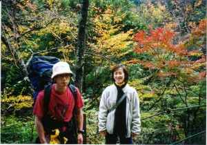
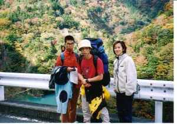
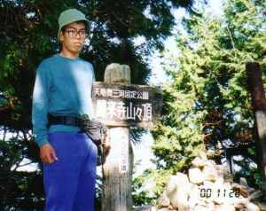

寸又峡ハイク＆鳳来寺山ハイク | ００’年１１月１９日（寸又峡ハイク）、２３日（鳳来寺山） |
|  飛竜橋周辺の紅葉がきれいな所で | 参加者： キッカー むらさん（加藤さん） らくさん 前日らくさん宅でキッカーが宿泊、今まで人を泊めたことなかったのにー。（倉庫みたいな部屋だった byキッカー） 一緒に夕食（ステーキなど）を食べ、明日の仕込みをした。 金谷駅でむらさんと合流。道中に買った大福おいしかったっけ。 （その場で焼いてもらって美味さ倍増：３つも食っちまたったぜ ｂｙキッカー） |
ザックに推定20ｋｇ（あれは２０ｋｇ以上あると私は感じた。相当おもかったぜよ ｂｙキッカー）の調理具（＆材料＆ビール）を詰めて寸又峡温泉から散策に出発。 途中でチャレンジー「キッカー」がザックをヒョイと担ぐも、足がちょっとヨロヨロ。大間ダムのエメラルドブルーの湖面に感動し、飛竜橋からの川岸斜面や山々の紅葉を堪能。有名な観光スポットのためか、観光客（主に中高年の人）でごった返していた。 |  大間ダムを眼下 |
|  左から らくさん、キッカー、むらさん | しかし、本道から外れた川原の道は、人がさっぱり。やっぱ、未舗装道路じゃなきゃー。川原でテントを設営し、食事メニューは煮込みうどん・餃子・キムチに焼き芋。ちょっと寒かったけど、のんびりと紅葉を満喫。（焼くのに失敗した焼き芋以外はちょー上手かったぞ！！ 冗談抜きに ｂｙキッカー） 景観地でテント設営にはチョット勇気が要りました。 文章作成 By らくさん |
11月26日 鳳来寺で紅葉鑑賞 参加者 シュガー、らくさん 天気は快晴。三河大野から、お寺まで東海自然歩道でLet Go! 東照宮参拝を済ませた後、らくさんは紅葉写真の撮影のために鳳来山周遊コースへ行ったが、あまり良い写真を撮れず。でも、谷底に見える紅葉はバッチリ。シュガーはらくさんほどタフでないため麓を散策。２人は合流し、途中チャリを使いながら下山。 帰りには、湯谷温泉「ゆーゆーありいな」でのんびり入浴。できれば、露天風呂から紅葉が見えるところが良かったなー。 |  鳳来寺山山頂 |